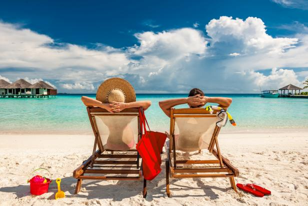
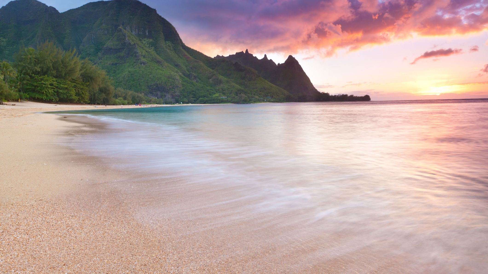
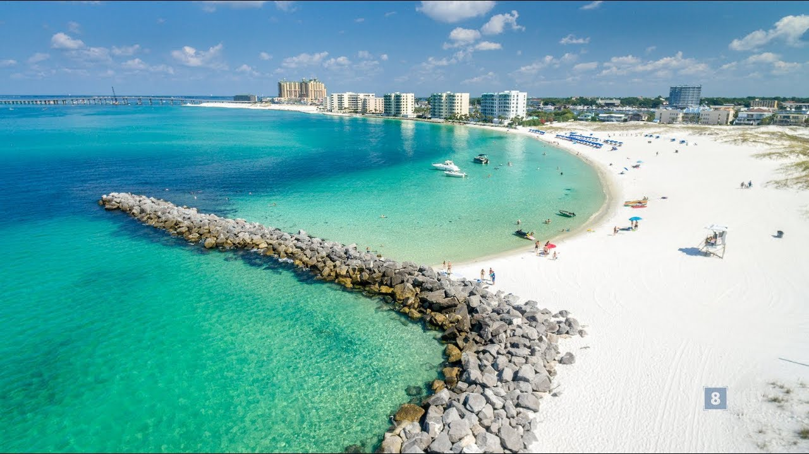

The beach is such a gorgeous place to be at, with beautiful waves to feast your eyes on while sipping an ice cold beverage. The beach is such a wonderful place that features relaxing walks, collectible rocks/shells, crazy sand dunes, clamming, and a place to run wild with your friends. It’s intriguing how the beach attracts such a wide range of people for just being the place where land meets the ocean. The beach can be an amazing place depending on what you do and who you bring with you.
Going to the beach can also have a lot of health benefits on top of fun times. Salt and minerals in ocean water can be soothing to aching joints. Sand also acts as a natural exfoliator to your skin, peeling away any dead skin hanging on. Swimming is also a lot of exercise; one hour of swimming can burn off up to 410 calories. Another great health benefit is the sun being a great source of Vitamin D, an essential vitamin that a lot of Americans lack.
The beach has a great way of clearing any anxiety or stress that may be happening in your life. The calm winds and enticing waves have such a unique calming effect. Whether you're relaxing on a towel or surfing the waves, you’re getting away from technology and the fear of missing out. In a society revolving around technology, it’s important to get away from it every once in a while to help clear the mind of all the clutter.
Maui
Maui has many beautiful island beaches, impressive wildlife, and an interesting history and culture. The shores of Wailea Beach and Ka'anapali Beach cannot be passed up. The best time to visit Maui is April-May and September-November. Keep in mind there are many people traveling at this time, so it may be a little crowded on the popular beaches (Maui, Ka'anapali, Lahaina, Kihei). Maui beaches also have great surfing spots during the winter for wilder waves. However, if you're just wanting to visit on vacation, it is recommended to travel in the summer when waters are calmest.

Kauai
Kauai is a place of wonders. Brilliant sunsets, pristine beaches, dazzling waters, and aquamarines skies await you at the end of the flight. The island has a sense of humbleness without any high-end luxurious resorts. Resorts in Kauai are no taller than a coconut tree. If you are a minimalist and prefer to live rurally, Kauai might even be a great living option for you; there are only two major highways and some regions can only be explored on foot or boat tours. However, it is not recommended to visit Kauai during the winter since hotel rates can reach up to $500 per night. It is best to get the full adventure during summer.
Destin
Destin is nicknamed the "World's Luckiest Fishing Village," and has grown into one of the most popular vacation spots on the Florida Panhandle. This town radiates an intimate, friendly atmosphere. Destin's beaches are made up purely of Appalachian quartz, a unique sand that not only stays cool in the heat of summer, but also gives the water a beautiful emerald tint. There are also amazing golf courses with seaside bunkers along with water parks for the kids. There are many opportunities to get out on the water; scuba diving, boating, fishing, swimming, and many more options to enjoy the emerald tinted waters of Destin beaches.
